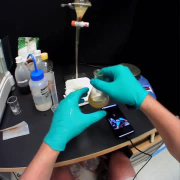
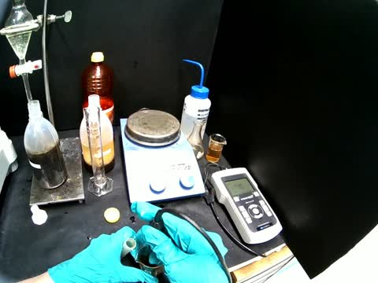
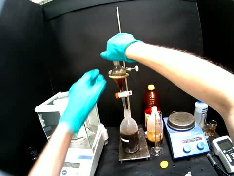
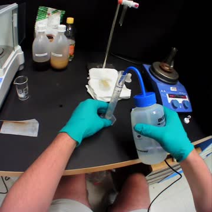
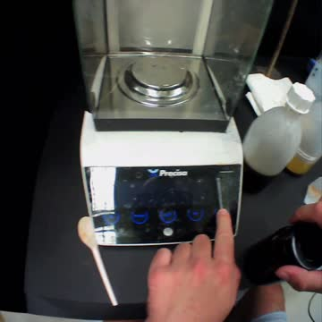
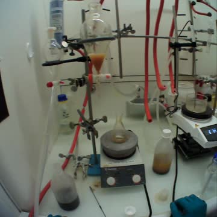
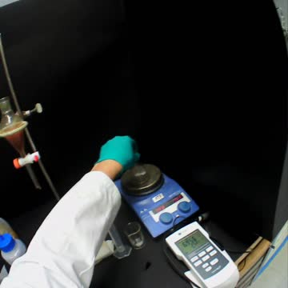
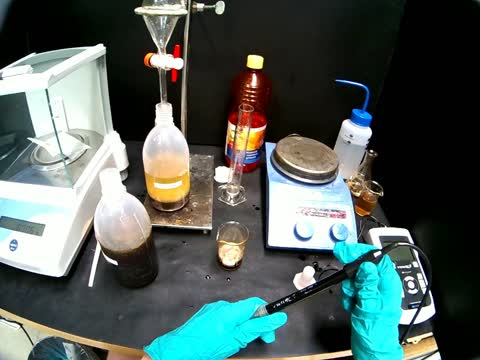
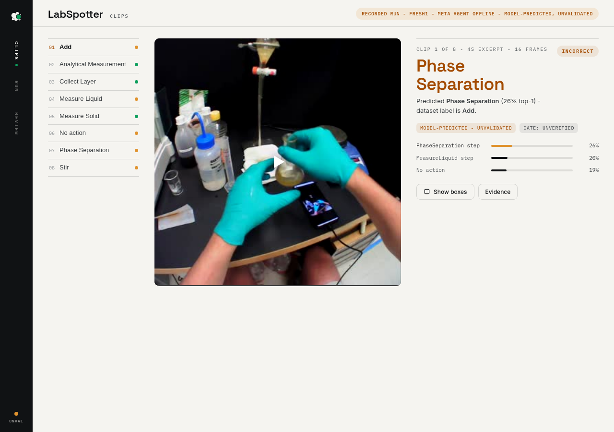
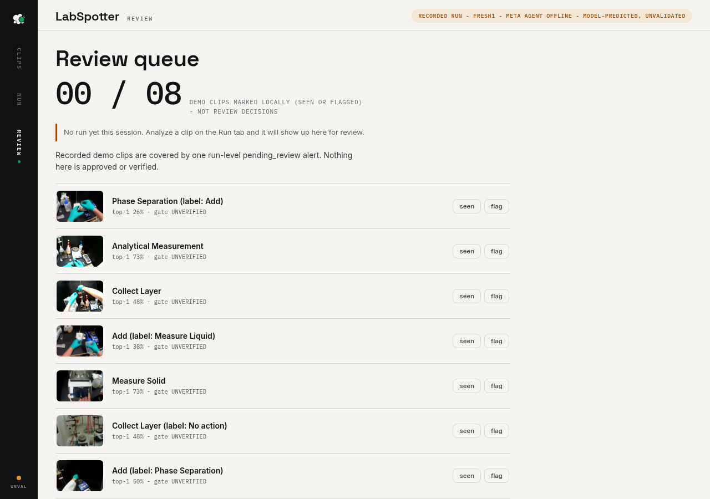

I'm proud of LabSpotter.app, my attempt to make physical lab work legible to a machine. It watches a procedure, recognizes lab action and gives users clip-level predictions they can inspect, instead of a single opaque decision. I built it well past a concept: a React and Python video-upload and review pipeline backed by PyTorch and Hugging Face. I started with a logistic-regression head on frozen V-JEPA 2 video representations, then moved to fine-tuning V-JEPA 2's last four transformer blocks. On my latest source-separated evaluation of 300 clips, fine-tuning raised balanced accuracy from 56.9% to 62.7%. On a 506-clip pilot, one fold reached 96.2% training balanced accuracy. What I'm proudest of is the testing behind those numbers. I checked whether the model recognizes actual lab actions and not just the background footage, and I designed the UI to show where predictions disagree instead of hiding model failures.
Upload a clip and the analysis server runs the model, then saves the run under a tag with predictions and still-frame evidence you can reopen later. React front end, Python + PyTorch backend, V-JEPA 2 video features via Hugging Face.
Add, Analytical Measurement, Collect Layer, Measure Liquid, Measure Solid, No action, Phase Separation and Stir, learned from real egocentric lab footage (IBM Research - Zurich) and evaluated on source-separated splits.
Every model call sits next to the exact clip it came from, with confidence, so anyone can see what the model saw and where it disagrees with the label. Failures are visible, never averaged away.
Real hand- and object-detection boxes rendered over the footage with a per-detector legend, so the review shows where in the frame the action happens.
Busy server returns a clear retry. Duplicate tags are blocked, never overwritten. If the connection drops mid-run, the app checks whether the tag was saved and recovers the stored run.
The Review queue walks saved runs clip by clip with local seen/flag marks and a running ledger, plus a benchmark reference panel that keeps recorded results clearly separated from new uploads.
A recorded walkthrough of the working app (38 s), captured 1 Nov 2026: a fixture clip plays on the Clips screen, then the Review queue walks the 8 IBM fixture clips with local seen/flag marks. Upload analysis runs on my private server, so this page shows the recorded run rather than a public live demo.








One testing-split clip per class from the IBM lab-actions dataset. These are the 8 clips the Review screen walks through.
Balanced accuracy, matched development folds, 300 clips.


The rebuilt interface running with the recorded fixture clips (1 Nov 2026): the Clips view with a clip-level prediction beside the footage, and the Review queue with the local-mark ledger. The in-app labels (recorded run, model-predicted) are part of the design.
Egocentric video clips of laboratory actions, IBM Research - Zurich, Zenodo 2024. Training and evaluation footage, 8 action classes. Licence: CDLA-Permissive-2.0.
V-JEPA 2, Meta FAIR. Self-supervised video encoder. Licence: MIT.